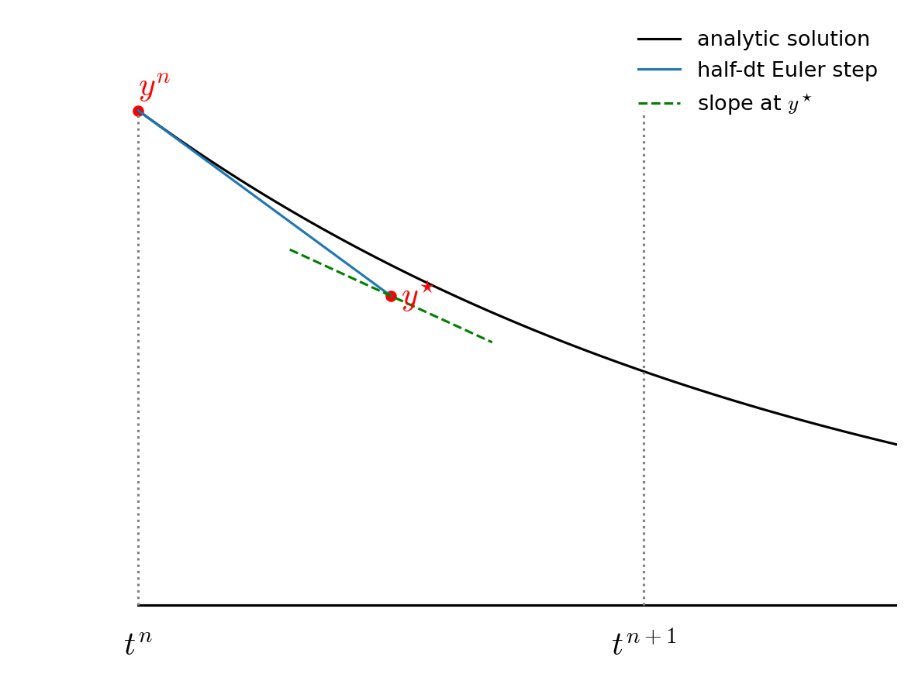
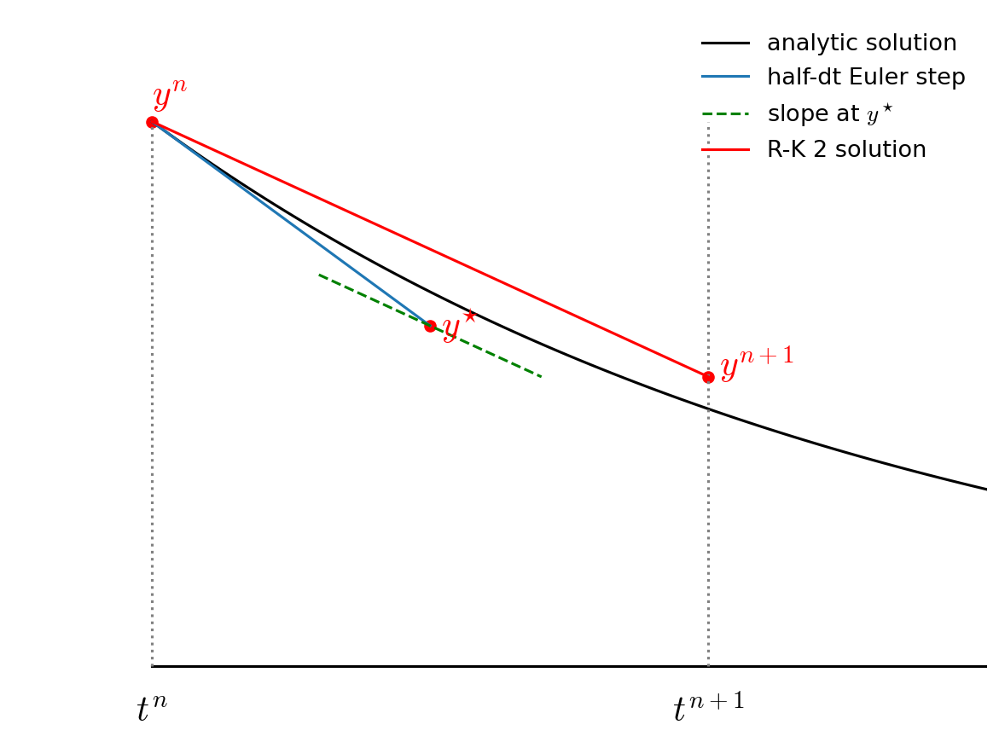

Higher-order Accurate ODE Integration
Contents
import numpy as np
import matplotlib.pyplot as plt
import matplotlib as mpl
mpl.rcParams['figure.dpi'] = 100
mpl.rcParams['figure.figsize'] = (10, 8)
Higher-order Accurate ODE Integration#
We’ll continue to work on the orbit problem, so let’s define our RHS.
G = 4*np.pi**2
M_sun = 1.0
def rhs(t, Y):
# unpack just to make things easier to read
x, y, vx, vy = Y
xdot = vx
ydot = vy
r = np.sqrt(x * x + y * y)
vxdot = -G * M_sun * x / r**3
vydot = -G * M_sun * y / r**3
return np.array([xdot, ydot, vxdot, vydot])
We’ll also define our OrbitHistory class again, this time adding a method to make a plot.
class OrbitHistory:
"""store the time history of the orbit solution"""
def __init__(self):
self.t = []
self.x = []
self.y = []
self.vx = []
self.vy = []
def store_current_solution(self, t, Y):
self.t.append(t)
self.x.append(Y[0])
self.y.append(Y[1])
self.vx.append(Y[2])
self.vy.append(Y[3])
def plot(self, ax=None, label=None):
"""make a plot of the solution. If ax is None we setup a figure
and make the entire plot returning the figure object, otherwise, we
just append the plot to a current axis"""
fig = None
if ax is None:
fig = plt.figure()
ax = fig.add_subplot(111)
# draw the Sun
ax.scatter([0], [0], marker=(20,1), color="y", s=250)
# draw the orbit
ax.plot(self.x, self.y, label=label)
if fig is not None:
ax.set_aspect("equal")
ax.set_xlabel("x [AU]")
ax.set_ylabel("y [AU]")
return fig, ax
2nd-order Runge Kutta / Midpoint method#
The Euler method was based on a first-order difference approximation to the derivative. But we know that a centered-derivative is second order accurate, so we can try to update our system in the form:
Then the updates are:
This is locally third-order accurate (but globally second-order accurate), but we don’t know how to compute the state at the half-time.
To find the \(n+1/2\) state, we first use Euler’s method to predict the state at the midpoint in time. We then use this provisional state to evaluate the accelerations at the midpoint and use those to update the state fully through \(\tau\).
The two step process appears as:
then we use this for the full update:
Graphically this looks like the following:
First we take a half step and we evaluate the slope at the midpoint:

Then we go back to \(t^n\) but follow the slope we found above all the way to \(t^{n+1}\):

Notice how the final step (the red line) is parallel to the slope we computed at \(t^{n+1/2}\). Also note that the solution at \(t^{n+1}\) is much closer to the analytic solution than in the figure from Euler’s method.
Let’s see how this method does with the orbit problem.
def euler_rk2(Y0, tau, T):
# we'll return an orbit history object
o = OrbitHistory()
# storage for the new solution
Y = Y0.copy()
# initialize time
t = 0
# store the initial conditions
o.store_current_solution(t, Y0)
# main timestep loop
while t < T:
# make sure that the last step does not take us past T
if t + tau > T:
tau = T - t
# get the RHS
Ydot = rhs(t, Y)
# predict the state at the midpoint
Ytmp = Y + 0.5 * tau * Ydot
# evaluate the RHS at the midpoint
Ydot = rhs(t + 0.5*tau, Ytmp)
# do the final update
Y += tau * Ydot
t += tau
# store the state
o.store_current_solution(t, Y)
return o
Setup our initial conditions as before with Earth on the +y axis and a counterclockwise circular velocity.
def initial_conditions():
x0 = 0
y0 = 1
vx0 = -np.sqrt(G*M_sun/y0)
vy0 = 0
return np.array([x0, y0, vx0, vy0])
Integrate our orbit.
T = 1
tau = T/12.0
Y0 = initial_conditions()
orbit = euler_rk2(Y0, tau, 1)
Let’s plot our orbit
fig = orbit.plot()
This is substantially better than the first-order Euler method. Now let’s look at a range of timesteps.
taus = [0.1, 0.05, 0.025, 0.0125]
for n, tau in enumerate(taus):
orbit = euler_rk2(Y0, tau, 1)
if n == 0:
fig, ax = orbit.plot(label=rf"$\tau = {tau:6.4f}$")
else:
orbit.plot(ax=ax, label=rf"$\tau = {tau:6.4f}$")
ax.legend()
<matplotlib.legend.Legend at 0x7f28e8fad6d0>